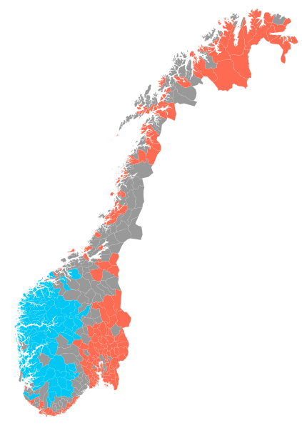

Idioma
El noruego es la lengua nativa de aproximadamente el 95 % de la población. Sin embargo, existen muchos dialectos que pueden diferir significativamente unos de otros. En general, la mayoría de dichos dialectos pueden entenderse entre sí, aunque algunos pueden requerir un esfuerzo considerable por parte del oyente. Desde el siglo XIX, el noruego ha sido objeto de una gran controversia política y cultural, lo que ha llevado a la creación de dos estándares de escritura oficiales: el bokmål y el nynorsk. El bokmål es más cercano al danés, mientras que el nynorsk intenta combinar la mayoría de dialectos de diferentes partes del país. Ambas variantes son reconocidas como lenguas oficiales, utilizándose en la Administración Pública, escuelas e iglesias, además de en los medios de comunicación, donde existen unos porcentajes mínimos de emisión en cada una. El bokmål es el que utiliza para escribir la gran mayoría de la población (85-90 %), aunque a la hora de hablar es habitual el uso de los dialectos propios de cada zona. Existen, además, algunas variantes más conservadoras del bokmal y del nynorsk, denominadas riksmål y høgnorsk, respectivamente.
También se hablan varias lenguas sami, especialmente el pueblo sami en el norte del país. Todos los noruegos tienen derecho a recibir educación en lengua sami, sin importar dónde vivan, y a recibir comunicaciones del gobierno en dichas lenguas. La minoría kven habla el idioma kven o el finlandés. Ni las lenguas sami ni el kven o el finlandés tienen relación con el noruego, pues pertenecen a una familia lingüística —las lenguas ugrofinesas— completamente diferente. Actualmente, Noruega no cuenta con una lengua de signos propia y oficial.
El noruego es similar a las otras lenguas de los países escandinavos, como el sueco y el danés. Las tres lenguas son mutuamente inteligibles, por lo que pueden ser —y de hecho son— empleadas en la comunicación entre los habitantes de Escandinavia. Como resultado de la cooperación en el Consejo Nórdico, los habitantes de todos los países nórdicos, incluyendo Islandia y Finlandia, tienen el derecho a comunicarse con las autoridades noruegas en sus respectivas lenguas.
A los estudiantes noruegos hijos de inmigrantes se les anima a aprender la lengua noruega. Igualmente, el Gobierno ofrece cursos del idioma para aquellos inmigrantes que deseen obtener la ciudadanía noruega. Noruega también destaca por su alto nivel de alfabetización, siendo uno de los 19 países del mundo que no tiene índices de analfabetismo.
El inglés es la principal lengua extranjera enseñada en las escuelas primarias de Noruega. La mayoría de la población lo habla de forma fluida, especialmente los nacidos después de la Segunda Guerra Mundial. El alemán, el francés o el español son también comúnmente enseñados como segunda o tercera lengua. Otros idiomas como ruso, japonés, italiano, latín y raramente chino mandarín están disponibles en algunas escuelas, sobre todo en las ciudades. Con todo, el inglés, el alemán y el francés fueron considerados los principales idiomas extranjeros en Noruega; por ejemplo, se utilizaron en el pasaporte noruego hasta la década de 1990 y existe un derecho por el que los estudiantes universitarios pueden utilizar dichos idiomas al presentar su tesis.
- Nynorsk
- Bokmål